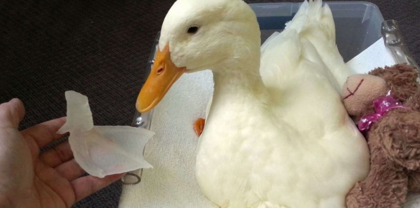

Prothèses
Prothèses 3D
La médecine a toujours cherché à remplacer une partie défaillante de notre corps par une autre ou encore à reconstruire une partie perdue. Dans cette sous-partie nous parleront des nouvelles prothèses mise sur le marché ces dernières années. Une prothèse est un dispositif artificiel destiné à remplacer un membre, un organe ou une articulation.
Les premiers à avoir utilisé ce dispositif étaient les militaires. Ils cherchaient juste à remplacer une partie de leur corps qui n'était plus fonctionnel a cause d'une blessure. Ils voulaient être capables d'exercer les mouvements les plus communs comme marcher par exemple ou attraper un objet.
Avec le temps cette démarche s'est vite élargie au domaine de la santé. De plus en plus de personnes victimes d'accidents on commencé à bénéficier de prothèses. Le défaut des prothèses est qu'elles sont trop superficielles, limitées et ne s’intègrent pas toujours bien avec le corps,
Grâce aux avancées technologiques de nos jours, on a cherché a réaliser des prothèses de plus en plus réalistes, de plus en plus variées et a optimiser leurs fonctions pour être capable de réaliser les mêmes actions qu’une personne qui n'en possède pas. Voici maintenant quelques prothèses des temps modernes.
Comme je l'ai dis plus haut les prothèses traditionnelles ont des caractéristiques trop restreintes au niveau de la forme ou de la taille ce qui obligent les chirurgiens à faire des compromis qui peuvent nuire aux patients. Les patients eux aussi sont obligés de s'adapter à leurs prothèses. Et les coûts de celles-ci sont très élevés.
Grâce à la fabrication de prothèses personnalisées. Ce n'est plus le patient qui s'adapte à la prothèse mais l'inverse. Il est aussi possible de réaliser n'importe quel type de prothèses donc de remplacer n'importe lequel de nos os par exemple. Le développement de prothèses faîtes à partir d'impression 3D permet aussi de faire baisser les coûts de celles-ci.
L'impression 3D est idéale pour résoudre les problèmes liés à la ressemblance et l'adaptation avec le reste du corps mais qu'en est t-il des mouvements pouvant être réalisés ?
Hélas ils restent limités c'est pour cela que l'homme à continué ses recherches afin de développer des prothèses encore plus perfectionnées et dotée d'intelligence.
Article rédigé le 19/01/2015 par Fabien Poirier étudiant à l'IUT de Montreuil (DUT Informatique).
<< Retourner à la liste des articles